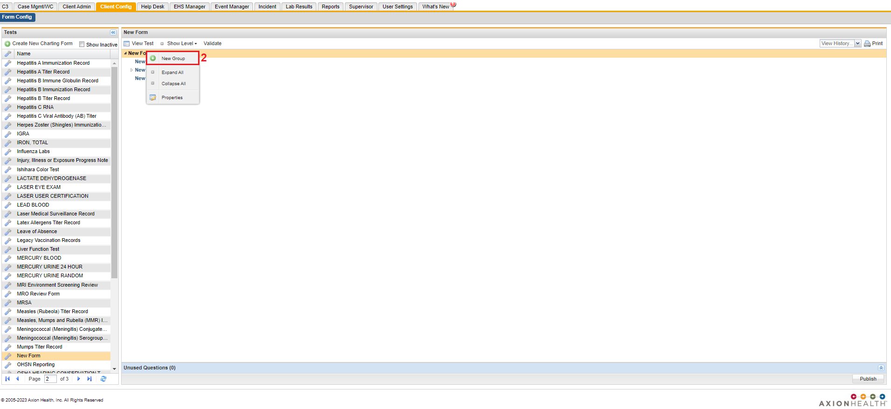
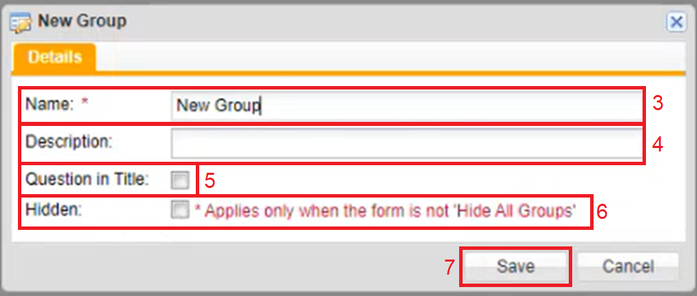

Adding a Group to a Charting Form
To Add a Group to a Charting Form
-
Once you are in the Charting Form window (see Navigating and opening a Charting form), right click the title of the New Form. A menu appears.
-
Click New Group.

The New Group window appears.

-
Click the Name textbox to type in the name of the New Group.
-
Fill in the Description textbox.
-
The Question in Title option can be selected if you have a set of group questions, and you want the first question to show up.
-
The Hidden option can be selected if you want to hide a group of questions.
You can only use this option when the form is not Hide All Groups.
-
Click Save.